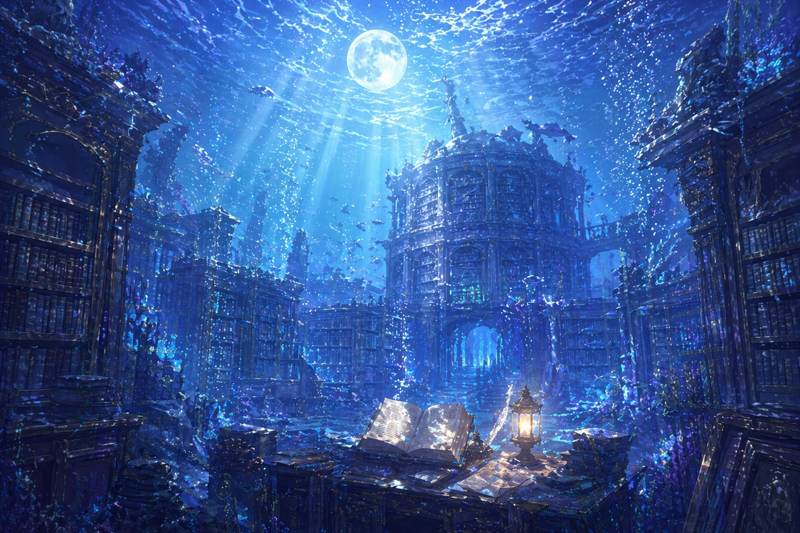

ここは、物語の眠る場所。
小説を中心に、時々イラストや設定資料を置いています。
夜、花、祈り、喪失、天使、少年、騎士。幻想文学寄りの創作サイトです。

更新履歴
- 断片〝ある夜の話。〟を追加
- 個人サイト公開
About
当サイトは個人による一次創作サイトです。掲載している文章・画像の無断転載、無断使用はご遠慮ください。
小説と絵と、世界の断片。
小説を中心に、時々イラストや設定資料を置いています。
夜、花、祈り、喪失、天使、少年、騎士。幻想文学寄りの創作サイトです。

当サイトは個人による一次創作サイトです。掲載している文章・画像の無断転載、無断使用はご遠慮ください。